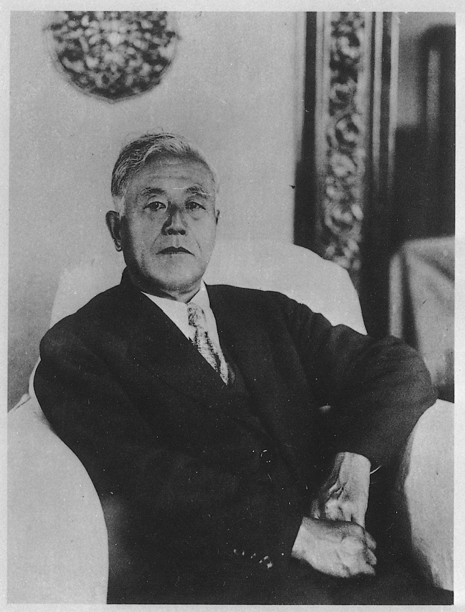

第 9 章
大谷的行李箱
明治三十五年（1902年）八月，伦敦。二十七岁的大谷光瑞从牛津大学地理系的课堂出来，沿着泰晤士河走了一段路。他刚从欧洲考察归来不久，脑子里装着两件事：一是英国皇家地理学会的探险报告，二是斯文·赫定在亚洲腹地发现楼兰遗址的消息。
这位年轻的日本僧人——净土真宗西本愿寺第二十二代法主的继承人——在伦敦的书店里翻到了一本德文著作：李希霍芬的《中国旅行记》。书中对塔里木盆地佛教遗迹的描述，让他在河边的长椅上坐了很久。
大谷光瑞不是普通的留学生。他出身于京都的宗教世家，自幼接受严格的佛学训练，又进入东京专门学校学习西洋学问。在伦敦，他同时上牛津和剑桥的课，听地理、考古、比较宗教学。他的行李箱里装着三样东西：佛经、地质锤、一本斯文·赫定签名赠送的《亚洲腹地旅行记》。
那个夏天，大谷做了一个决定。他不回京都继承法主之位，而是要从伦敦直接出发，横跨欧亚大陆，进入中国西域。他要去看佛教东传的路线——从印度经中亚到中国、再到日本的那些古道。他要亲眼见到沿途的寺院遗址、石窟造像、壁画经卷。他要把实物带回日本。这个决定改变了西域许多遗址的命运。## 一
大谷探险队一共进行了三次考察。第一次在1902至1904年，大谷本人带队；第二次在1908至1909年，由橘瑞超和野村荣三郎负责；第三次在1910至1914年，橘瑞超再次进入西域。三次考察的路线不同，但都指向同一个地区：吐鲁番盆地、塔里木盆地北缘的佛教遗址群。
大谷探险队的组织方式与其他考察队有显著区别。斯坦因背后是大英博物馆和印度政府，伯希和代表法国远东学院，勒柯克受德国皇家吐鲁番考察队派遣。这些人都带着明确的学术机构授权和国家利益诉求。
大谷不同。他的探险经费来自西本愿寺的寺产和信徒捐赠，队员多是寺院僧侣或与净土真宗有关的学者。他们的考察报告最初发表在《佛教史学》和《西域考古图谱》上，读者是日本的佛教学者和僧侣。
这种组织方式决定了收集品的流向。斯坦因的收集品大部分进了大英博物馆和印度新德里国立博物馆，伯希和的进了法国国家图书馆和吉美博物馆，勒柯克的进了柏林民族学博物馆。
大谷的收集品则分散在三个地方：京都的西本愿寺、旅顺的关东都督府博物馆、神户的私人住宅。三次考察带回来的东西，至今没有一份完整的清单。已知的收集品包括：佛头像、佛教绢画、木版画、写经残片、石窟壁画残块、钱币、陶器、织物残片。其中最大宗的是写经和壁画残块。写经中有汉文、回鹘文、梵文、藏文、西夏文，最早的可以追溯到五世纪。
壁画残块主要来自柏孜克里克千佛洞和克孜尔石窟。这些物品被装进木箱，用骆驼驮出沙漠，再装进火车，运到天津或上海，最后装船运往日本。每一只箱子都贴着标签，标签上写着编号和简略的出土地点。但标签经常脱落，编号系统也多次变更。当箱子抵达京都时，有些记录已经对不上了。## 二
1908年夏天，橘瑞超和野村荣三郎在吐鲁番盆地工作了四个月。橘瑞超十八岁，是大谷在西本愿寺办的学校里的学生，出家不久，对中亚语言有天赋。野村荣三郎年长些，负责摄影和测量。他们在柏孜克里克千佛洞待了三个星期。
柏孜克里克千佛洞位于吐鲁番东北约四十公里处，木头沟西岸的断崖上。洞窟开凿于麴氏高昌国时期，回鹘高昌时期大规模扩建，现存洞窟八十余个。壁画内容主要是佛本生故事、经变图、供养人像。回鹘时期的供养人像尤为著名：身着锦袍的回鹘王公贵族，面容丰满，衣饰华丽，手持供花或经卷，排列在洞窟两侧。
橘瑞超和野村荣三郎到达时，柏孜克里克已经被人翻过好几遍了。克列门茨在1898年来过，割走了一些壁画。格伦威德尔和勒柯克的德国考察队从1902年起在这里工作了多次，割走了大量壁画——勒柯克在《火州》一书中详细描述了他如何用狐尾锯切割壁画，如何把切割下来的壁画用芦苇和棉花包裹，装进木箱。斯坦因在1907年也来过。但橘瑞超和野村荣三郎还是找到了东西。
他们在四十七个洞窟里进行了发掘。发掘这个词需要解释一下。当时的“发掘”并不是现代考古学意义上的地层学发掘，而是在洞窟内清理积沙，在沙土中翻找遗物。他们找到了佛头像、佛教绢画、《金刚经》残碑、写经残片。
他们还割取了八块大型壁画和数量更多的壁画残块。割取壁画的方法与勒柯克类似：先用锋利的刀在壁画表面划出切割线，然后用锯沿切割线锯开，把壁画连同后面的泥层一起取下来。取下来的壁画被平放在木板上，表面覆盖绵纸，四周用棉花填塞，再盖上另一块木板，用绳子捆紧。一块壁画残块就这样变成了一件可以运输的物品。
橘瑞超在日记里记录了这些操作。他的日记写得很简略，主要是日期、地点、天气、工作内容。关于割取壁画，他只写了几个字：“壁画八枚切取”。没有描述壁画的内容，没有记录原来的位置，没有画示意图。这不是橘瑞超个人的疏忽。当时几乎所有考察队的记录方式都是如此。
在他们看来，壁画是可以移动的“标本”，其价值在于图像内容和艺术风格，而不在于它在洞窟建筑中的具体位置。把壁画切下来带回博物馆，在当时被认为是保存和研究佛教艺术的正当方式。但有一件事值得注意。勒柯克在切割壁画时，会先拍照，记录壁画在洞窟中的原始位置，并在报告中画出位置示意图。橘瑞超和野村荣三郎没有这样做。他们拍摄了一些洞窟外观和壁画局部的照片，但没有系统地记录切割位置。这意味着，后来被运到日本的那八块大型壁画，其原境信息在离开柏孜克里克的那一刻就已经丢失了。## 三
大谷探险队的收集品中，有一件东西后来变得很有名：一块柏孜克里克千佛洞的壁画残块，上面绘有回鹘供养人像。这块壁画残块在1910年代运抵京都，最初存放在西本愿寺的仓库里。后来几经转手，最终入藏东京国立博物馆。
这块壁画残块的内容很有意思。画面上是一个回鹘贵族男子，头戴黑色高冠，身着红色锦袍，腰间系带，双手合十。他的面容清晰可辨：浓眉、高鼻、细长的眼睛、唇上有两撇胡须。这种面容与汉地佛像的供养人截然不同，带有明显的突厥-蒙古人种特征。
大谷光瑞对这类供养人像特别感兴趣。他在1904年出版的《西域考古图谱》序言中写道：“西域诸国，昔为佛教东渐之孔道。自印度经罽宾、于阗、龟兹、高昌，以至敦煌、凉州、长安，佛教艺术随地理而变容，遂成汉地样式。今观柏孜克里克壁画，回鹘供养人面貌衣冠，犹存塞外之风，而佛菩萨像则已见汉化之迹。此实佛教东传之活证也。”
这段话清晰地表达了大谷探险队的学术动机。他们不是简单地收集古物，而是在寻找“佛教东传”的实物证据。在西域佛教遗址中，他们看到了佛教从印度经中亚传入中国、再传到日本的路线图。每一尊佛像、每一块壁画、每一片写经，都是这条路线图上的一个节点。
这个叙事框架在当时有很强的说服力。十九世纪末二十世纪初，日本佛教学界正在系统研究佛教传入日本的路径。此前的研究主要依据汉文大藏经中的文献记载，缺乏实物证据。西域考古的兴起，让学者们第一次看到了中亚佛教遗址的实物面貌。那些石窟、壁画、造像、写经，仿佛是佛教东传路线上的一盏盏路灯，从印度一路亮到中国，再亮到朝鲜半岛和日本。
大谷光瑞在这个学术潮流中扮演了关键角色。他不仅是探险的组织者，也是这套叙事的构建者之一。他利用西本愿寺的财力和网络，把大量西域佛教实物运回日本，供学者研究。他主编的《西域考古图谱》和《新西域记》成为日本佛教学界的基本参考文献。

他在京都西本愿寺内设立的“西域文化研究会”，聚集了一批年轻学者，专门研究探险队带回来的收集品。但在这个过程中，一个微妙的变化发生了。那些原本属于特定寺院、特定洞窟、特定供养人的佛教艺术品，在被装进大谷的行李箱、运到京都之后，其身份发生了变化。它们不再是高昌回鹘王族的供养物，不再是柏孜克里克某个洞窟的装饰，不再是吐鲁番盆地某个佛教社区的法物。它们变成了“佛教东传”的物证，变成了跨国佛教史叙事中的一环。这是一种再语境化。原境被剥离了，新的语境被赋予。在新的语境中，这些文物的意义被重新定义。它们不再讲述高昌回鹘的故事，而是讲述日本佛教的源流。## 四
大谷探险队收集品的分散过程，本身就是一个值得讲述的故事。1914年，大谷光瑞辞去了西本愿寺法主的职位。原因复杂，涉及西本愿寺内部的权力斗争和财务问题。大谷的探险活动花费巨大，三次考察总计花费约五十万日元——这在当时是一笔巨款，相当于西本愿寺数年的总收入。部分寺产被变卖以支付探险费用，这引起了寺内保守派的不满。
大谷辞职后，收集品开始分散。一部分留在西本愿寺，后来转移到龙谷大学。一部分被大谷带到旅顺——他在那里担任关东都督府顾问，把一批收集品存放在关东都督府博物馆。还有一部分被运到神户，存放在大谷的私人住宅“二乐庄”中。
二乐庄是一个特殊的地方。大谷在神户的这处宅邸内设立了研究室和展示室，陈列他从西域带回来的收集品。1915年至1917年间，二乐庄成为日本西域研究的中心之一。学者们在这里研究写经、壁画、绢画，出版研究报告。
但二乐庄的收集品并不稳定。1917年，大谷因财务压力出售了二乐庄的部分藏品。
买主包括久原房之助等实业家，以及东京、京都的博物馆。旅顺的那批收集品，命运更加曲折。关东都督府博物馆后来改为旅顺博物馆，大谷的收集品成为该馆的重要藏品。1945年日本战败后，旅顺由苏联接管，1955年移交给中国。这批收集品至今仍在旅顺博物馆。其中包括一些重要的写经和壁画残块，其来源至今仍在研究中。
京都的那批收集品，大部分入藏龙谷大学。龙谷大学是西本愿寺办的学校，其图书馆和大谷纪念馆保存了相当数量的收集品。东京国立博物馆、京都国立博物馆、东京大学也各有一些。
还有一部分收集品流入了私人收藏。大谷在二乐庄出售藏品时，一些写经残片和绢画被私人藏家买走，此后踪迹不明。有些后来出现在拍卖市场上，有些至今下落不明。
这种分散状态造成了一个直接后果：研究者很难对某一处遗址的出土物进行系统研究。柏孜克里克千佛洞的壁画残块，如今分散在柏林、伦敦、新德里、东京、京都、旅顺、圣彼得堡。每个地方存着几块，每块都有不同的入藏编号和来源记录。
要把同一洞窟的壁画残块拼合起来，研究者需要跑遍三大洲的七八家机构。
更麻烦的是，许多残块的来源记录不完整。大谷探险队的记录尤其如此。橘瑞超和野村荣三郎的日记只记录了大概的出土地点——“吐鲁番”“柏孜克里克”“木头沟”——但没有精确到洞窟编号。后来的入藏记录往往只写“大谷探险队采集”“西域出土”，连具体遗址都不写。
这不仅仅是记录技术的问题。在当时的观念中，这些文物的价值在于其艺术和宗教意义，而不在于其出土地点。一块柏孜克里克的壁画残块和一块克孜尔的壁画残块，在大谷的叙事框架中都是“佛教东传”的证据，来自哪个具体洞窟并不重要。但这种观念在今天造成了巨大的困难。当研究者试图复原某个洞窟的壁画配置时，当博物馆试图追溯某件藏品的来源合法性时，当追索方试图证明某件文物确实来自某个特定遗址时，那些缺失的记录就成为无法逾越的障碍。## 五
1908年秋天，橘瑞超和野村荣三郎结束了在吐鲁番的工作，把收集品装进木箱，用骆驼运到乌鲁木齐。从乌鲁木齐到天津，他们走了一个多月。在天津，箱子被装上一艘日本货轮，运往神户。货轮在海上航行了十几天。橘瑞超在船上给大谷光瑞写了一封信，报告此行的收获。信中列举了主要收集品：佛头像若干、绢画若干、写经残片若干、《金刚经》残碑一块、壁画残块若干。信的最后，他写了一句：“西域佛教之盛，今犹可见。然遗址荒废，风沙侵蚀，若不速加保护，恐数十年后将无迹可寻。”
这句话代表了当时许多探险家的共同看法。他们认为，西域佛教遗址正在迅速毁坏——风沙侵蚀、地震破坏、当地居民取土烧砖、寻宝者盗掘——如果不尽快把壁画和写经转移到安全的地方，它们就会永远消失。这种“抢救性保护”的论述，是探险活动合法性的重要来源。
这个论述并非完全没有道理。柏孜克里克千佛洞在二十世纪初确实面临严重的自然和人为破坏。木头沟的断崖是黄土结构，雨水和风沙不断侵蚀洞窟。有些洞窟已经坍塌，有些壁画已经剥落。当地居民确实在取土烧砖，有些洞窟被当作羊圈使用。
但“抢救性保护”的论述有一个盲点：它没有考虑切割壁画本身对遗址造成的破坏。当勒柯克、橘瑞超、奥登堡等人用锯子把壁画从墙上切下来时，他们破坏了洞窟的整体性。被切走壁画的墙面露出粗糙的泥层，周围的壁画边缘受损，有些洞窟的天花板壁画在切割过程中大片剥落。更严重的是，切割壁画往往伴随着选择。探险队通常只切割保存状况最好、艺术价值最高的壁画，留下那些他们认为“不重要”的部分。
这种选择性的“保护”，实际上是对遗址的二次破坏——它把完整的洞窟装饰拆成了碎片，只取走了其中的精华。橘瑞超在柏孜克里克切割的八块大型壁画，具体来自哪些洞窟，今天已经难以确认。研究者根据照片和描述，推测其中一部分可能来自第9窟和第20窟。
但这些推测无法得到证实，因为橘瑞超没有留下位置记录。那些留在原址的壁画，后来的命运各不相同。有些在1920年代的军阀混战中被破坏，有些在1930年代被当地官员割走变卖，有些在1960年代被砸毁，有些幸存至今，成为吐鲁番地区的重要文化遗产。而那些被运到日本的壁画残块，有些在1945年的神户大空袭中被烧毁，有些在战后被转卖，有些至今保存在博物馆的库房里。“保护”是一个复杂的词。在二十世纪初的西域考古语境中，它同时意味着保存和破坏、抢救和剥离、延续和中断。## 六
1911年，大谷光瑞在京都出版了两卷本的《西域考古图谱》。这是大谷探险队最重要的出版物，收录了三次考察收集品的照片和简要说明。图谱分上下两卷，上卷是雕塑和壁画，下卷是写经和杂项。每件物品都有编号和简短说明，注明出土地点和尺寸。翻阅这部图谱，可以看到大谷探险队收集品的范围之广。有犍陀罗风格的佛头像，有回鹘风格的供养人像，有汉文《法华经》残卷，有回鹘文《金光明经》残片，有梵文贝叶经，有藏文陀罗尼。这些物品跨越了从三世纪到十三世纪的漫长时段，覆盖了从印度北部到中国西北的广大地域。
图谱的编排方式值得注意。大谷没有按出土地点分类，而是按物品类型分类：雕塑归雕塑，壁画归壁画，写经归写经。这种分类法反映了编者的学术意图：他要呈现的不是某个遗址的面貌，而是佛教艺术在亚洲传播的整体图景。在这个图景中，每一件物品都是“佛教东传”的一个例证，其出土地点的具体性被纳入了更大的叙事框架。大谷在序言中写道：“此图谱所收，皆西域佛教之遗物。
自印度北境至于中国西陲，凡佛教东渐所经之地，其寺院、石窟、塔庙之遗迹，壁画、造像、写经之遗品，略备于此。览者由此可以考见佛教艺术之变迁，与夫东西交通之迹。”
“佛教艺术之变迁”——这是大谷的核心关怀。他要通过这些实物，勾勒出佛教艺术从印度经中亚到中国的演变过程。在这个过程中，犍陀罗的希腊化佛像变成了克孜尔的龟兹风格，再变成敦煌的汉地风格，最后变成日本的样式。每一种风格都是链条上的一环，每一件实物都是这个链条的物证。
这个学术框架对后来的日本佛教学研究影响深远。直到今天，日本许多博物馆的“东洋馆”或“亚洲馆”，仍然采用这种以佛教传播路线为线索的陈列方式。来自中国西域、朝鲜半岛、日本列岛的佛教文物，被放在同一个展厅里，讲述同一个“佛教东传”的故事。
但这个框架也有代价。当文物被纳入“佛教东传”的叙事时，它们原来的地方性语境就被淡化了。柏孜克里克千佛洞的回鹘供养人像，在高昌回鹘的语境中，是王公贵族表达宗教虔诚和政治权力的载体。但在“佛教东传”的叙事中，它变成了佛教艺术中国化的一个例证。其政治含义、社会功能、地方特色，都在这个叙事转换中被稀释了。这是文物流散史中一个更隐蔽的层面。
不仅是物质上的离开原境，也是意义上的离开原境。文物在新的收藏地和新的学术框架中，被赋予了新的身份和新的价值。这种身份转换，有时比物质转移影响更深远。## 七
大谷探险队的故事在1914年之后进入了一个新阶段。大谷光瑞辞去法主职位后，探险队解散，收集品分散。但“佛教东传”的叙事框架并没有随之消失，反而在日本的博物馆和大学里扎下根来。龙谷大学成立了大谷研究所，专门研究大谷收集品中的写经。东京国立博物馆的东洋馆，长期陈列大谷收集品中的壁画和雕塑。旅顺博物馆的藏品中，大谷收集品是核心部分之一。
这些机构各自按照自己的学术传统和展览逻辑，对大谷收集品进行分类、研究和展示。在这个过程中，同一处遗址出土的文物被分到了不同的机构，同一件文物也可能在不同机构之间流转。大谷收集品的来源记录本来就简略，经过多次转手后，许多物品的来源信息变得更加模糊。
有些物品的原始标签在转运中丢失，后来补上的标签只写了“大谷探险队将来”几个字。这种状况给今天的来源研究造成了巨大困难。研究者要从大谷探险队留下的有限记录中，辨认出每件物品的具体出土地点，再与其他探险队的记录进行比对，试图重建某一洞窟的原始面貌。
这项工作进展缓慢，许多问题至今没有答案。但大谷收集品的分散状态，也意外地保留了一些信息。不同机构对大谷收集品的不同处理方式，反映了不同学术传统对同一批文物的不同理解。龙谷大学侧重写经的文本研究，东京国立博物馆侧重壁画的图像研究，旅顺博物馆侧重考古学的地层分析。这些不同的研究视角，从不同侧面揭示了大谷收集品的丰富内涵。
近年来，一些机构开始尝试数字化整合。龙谷大学与旅顺博物馆合作，对大谷收集品中的部分写经进行了联合编目。东京国立博物馆与柏林亚洲艺术博物馆合作，对柏孜克里克千佛洞的壁画残块进行了数字拼合。这些工作虽然规模有限，但指向了一种可能性：在物质分散不可逆转的情况下，数字技术可以在虚拟空间中恢复某种程度的整体性。这是另一个故事了。## 八
回到1908年秋天的那个场景。橘瑞超和野村荣三郎在柏孜克里克千佛洞工作了三个星期，割取了八块大型壁画，发掘了四十七个洞窟，收集了一批佛头像、绢画、写经残片。他们把东西装进木箱，用骆驼运到乌鲁木齐，再转运到天津，最后装船运往日本。箱子抵达神户港时，大谷光瑞亲自到码头接货。他打开箱子，一件一件地查看。
有佛头像，有壁画残块，有写经残片。他拿起一片写经，仔细辨认上面的文字。是汉文《金刚经》残片，字迹清晰，纸质泛黄。大谷把残片放回箱子，吩咐把箱子运到京都西本愿寺的仓库。仓库里已经堆了许多箱子，都是从西域运回来的。有些箱子已经打开了，有些还贴着封条。每个箱子上都写着编号和大概的出土地点：“吐鲁番”“库车”“和田”“敦煌”。这些箱子在仓库里放了很久。
有些被打开研究，有些被转送到其他机构，有些被出售，有些被遗忘。几十年后，当研究者重新打开这些箱子时，发现里面的物品和最初的记录已经对不上了。有些物品不在记录里，有些记录里的物品找不到了。
大谷的行李箱，从西域到京都，再到旅顺和神户，装着的不仅是文物，也是一套关于“佛教东传”的叙事。这套叙事赋予了这些文物新的身份和新的价值，但也使它们永远离开了原来的语境。今天，大谷探险队的收集品散落在至少十家机构中。
东京国立博物馆存有壁画残块和雕塑，约二百余件。京都国立博物馆存有写经和绢画，约一百余件。龙谷大学存有写经残片和文献，约数千件。旅顺博物馆存有写经、壁画残块和杂项，约数百件。东京大学、京都大学、大谷大学各有一些。私人收藏的数量不详。这些数字是冷冰冰的。
它们不讲述故事，不表达情感，不做出判断。它们只是陈列在那里，像一份清单，记录着二十世纪初那场学术探险的物质后果。柏孜克里克千佛洞的壁画，如今在柏林有二十余块，在圣彼得堡有十余块，在伦敦有数块，在新德里有数十块，在东京有数块，在旅顺有数块。每一块都有编号，每一块都有来源记录，每一块都有学术价值。但它们不再属于同一面墙。那面墙还在柏孜克里克。墙上留着切割的痕迹，边缘整齐，像是一道道伤口。